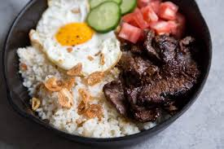
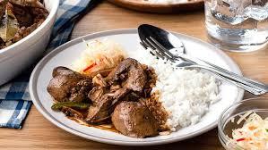

FOOD PLAN
SEPTEMBER 17 / DAY 2
- BREAKFAST: Tapsilog
(Beef Tapa, Fried Rice, and Fried Egg)

- CALORIES CONTENT
-
670 calories
- NUTRITIONAL ADVANTAGES AND BENEFITS
-
Tapa is a high-protein food that also contains key minerals
such as B vitamins, zinc, and iron, all of which promote an
active and healthy lifestyle.
-
Garlic and rice both contain antioxidants, which help protect
cells from free radical damage. Antioxidants help to reduce the
risk of chronic illnesses.
-
Fried egg protein has been showed to reduce malnutrition, boost
muscle health, and hence help in losing weight.
- LUNCH: Adobong manok with 2 Rice

- CALORIES CONTENT
- 780g
- NUTRITIONAL ADVANTAGES / BENEFIT
-
Adobong manok: The marinade's garlic and bay leaves include vitamins
and minerals including vitamin C and calcium, which can aid to enhance
the immune system and promote bone health.
- 4 gardenia bread and nutella
- CALORIES CONTENT
- 425 calories
- NUTRITIONAL ADVANTAGES / BENEFIT
-
Nutella is high in fiber, which helps lower cholesterol levels. It lowers
the chance of acquiring heart disease.
-
It includes vitamins B1, B2, and B3, which aid in the release of energy from
the proteins, lipids, and carbs in the food we eat, assisting our bodies in
their energy production.